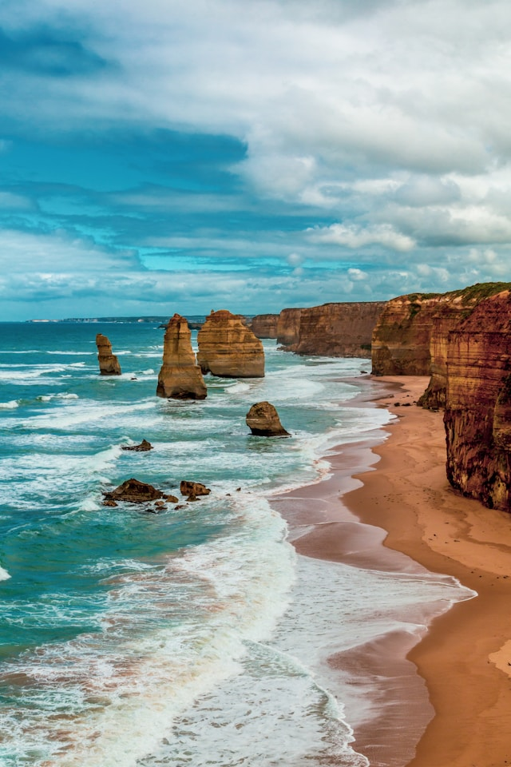
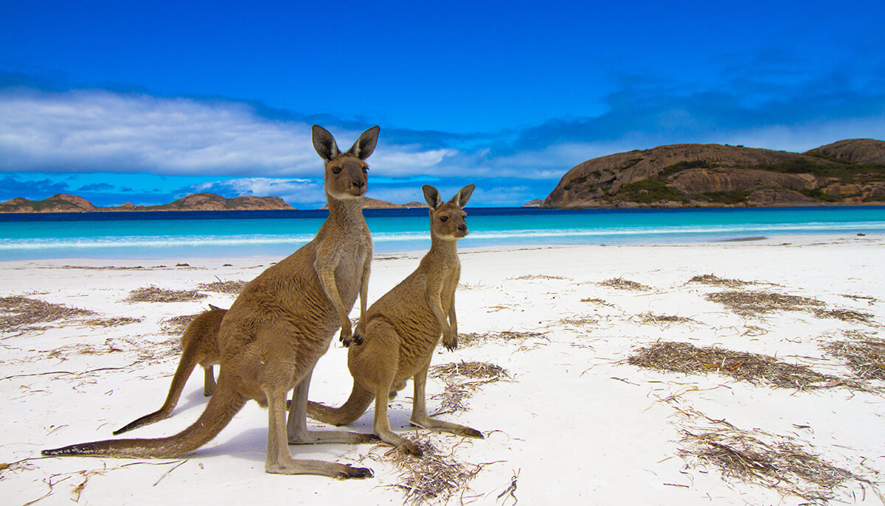
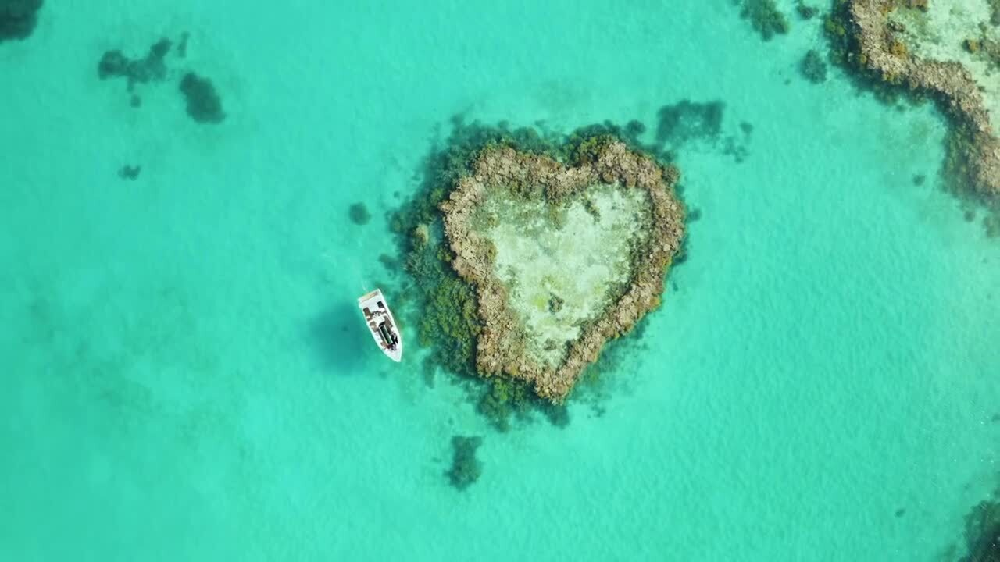

📸 Australia Gallery

Sydney Opera House

Great Barrier Reef

Uluru (Ayers Rock)

Daintree Rainforest

Great Ocean Road

Kangaroo Island

Whitehaven Beach, Whitsundays

Australia is a vast island continent known for its diverse landscapes — from sun-kissed beaches and vibrant coral reefs to red desert plains and lush rainforests. It's a melting pot of cultures with iconic wildlife and world-famous landmarks.
From the bustling harbours of Sydney to the ancient sandstone monolith of Uluru, Australia offers a unique mix of natural wonders, Indigenous heritage, and modern city life.
Key highlights include the Great Barrier Reef, the Great Ocean Road, the tropical Daintree Rainforest, and the cosmopolitan cities of Sydney, Melbourne and Brisbane. Outdoor adventures, wildlife encounters, and indigenous cultural experiences make Australia a bucket-list destination.
Australia, officially the Commonwealth of Australia, is a country comprising the mainland of the Australian continent, the island of Tasmania and numerous smaller islands. It has a total area of 7,688,287 km2 (2,968,464 sq mi), making it the sixth-largest country in the world and the largest in Oceania. Australia is the world's flattest and driest inhabited continent. It is a megadiverse country, and its size gives it a wide variety of landscapes and climates including deserts in the interior and tropical rainforests along the coast.
The ancestors of Aboriginal Australians began arriving from Southeast Asia 50,000 to 65,000 years ago, during the last glacial period.By the time of British settlement, Aboriginal Australians spoke 250 distinct languages and had one of the oldest living cultures in the world.Australia's written history commenced with Dutch exploration of most of the coastline in the 17th century. British colonisation began in 1788 with the establishment of the penal colony of New South Wales. By the mid-19th century, most of the continent had been explored by European settlers and five additional self-governing British colonies were established, each gaining responsible government by 1890. The colonies federated in 1901, forming the Commonwealth of Australia. This continued a process of increasing autonomy from the United Kingdom, highlighted by the Statute of Westminster Adoption Act 1942, and culminating in the Australia Acts of 1986.
Australia is a federal parliamentary democracy and constitutional monarchy comprising six states and ten territories. Its population of almost 28 million is highly urbanised and heavily concentrated on the eastern seaboard. Canberra is the nation's capital, while its most populous cities are Sydney and Melbourne, both with a population of more than five million.Australia's culture is diverse, and the country has one of the highest foreign-born populations in the world. It has a highly developed economy and one of the highest per capita incomes globally. Its abundant natural resources and well-developed international trade relations are crucial to the country's economy. It ranks highly for quality of life, health, education, economic freedom, civil liberties and political rights.
Australia is a middle power, and has the world's thirteenth-highest military expenditure. It is a member of international groups including the United Nations; the G20; the OECD; the World Trade Organization; Asia-Pacific Economic Cooperation; the Pacific Islands Forum; the Pacific Community; the Commonwealth of Nations; and the defence and security organisations ANZUS, AUKUS, and the Five Eyes. It is also a major non-NATO ally of the United States.